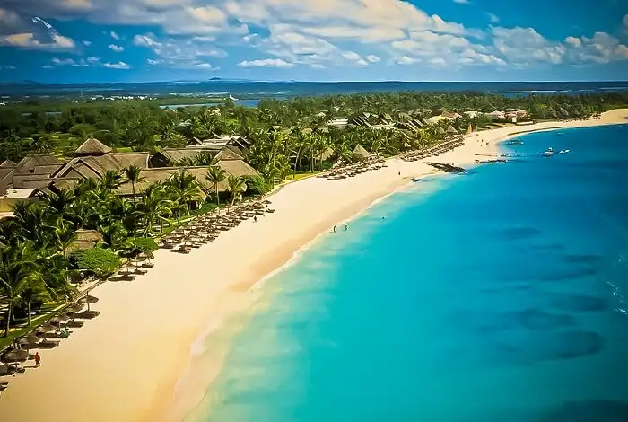

Discover the beaches of Mauritius!

Tamarin Beach
Tamarin Beach is in the Tamarin Village of Mauritius, a beautiful village that’s surrounded by hills near Black River on the west coast. Also called the ‘Surfer Beach’ as it is famous for surfing
more info ...

La Cuvette Beach
Situated near the town of Grand Bay in the northwest of Mauritius, La Cuvette Beach is a small beach as compared to the other beaches in Mauritius, but an extremely beautiful one
more info ...
Blue Bay Beach
Simply pure! Located in the Grand Port district in the eastern part of Mauritius, Blue Bay Beach is an amazing spot for sea-bathing and swimming.
more info ...